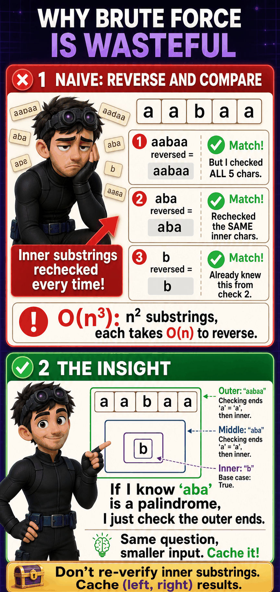
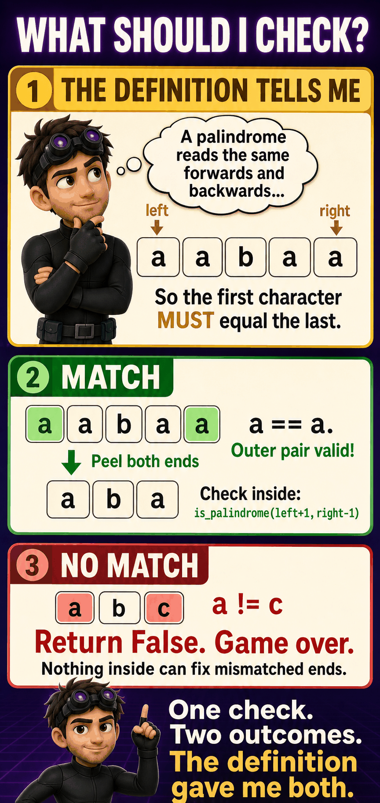
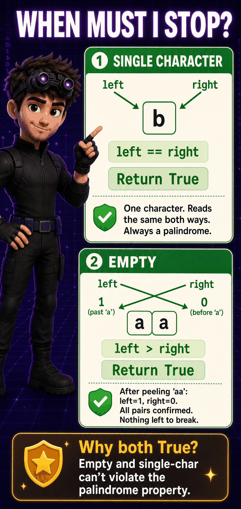
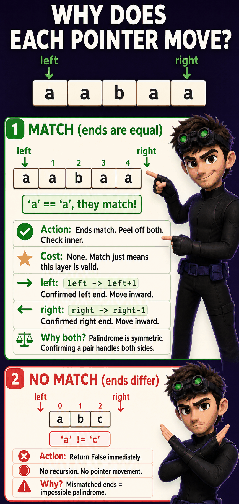

The Problem
Palindromic Substrings (LeetCode #647)
Given a string text, count how many of its substrings are palindromes.
| text | count | why |
|---|---|---|
"aab" | 4 | a, a, b, aa |
"abc" | 3 | a, b, c |
"aaa" | 6 | a, a, a, aa, aa, aaa |
"a" | 1 | a |
"aabaa" | 9 | 5 single + aa + aa + aba + aabaa |
1 What Is It Really Asking?
For every possible (left, right) pair, ask one yes/no question: is text[left..right] a palindrome? Count the yeses.
2 What Would I Naturally Try?
For every substring, reverse it and compare to the original.
for left in range(n):
for right in range(left, n):
sub = text[left:right+1]
if sub == sub[::-1]:
count += 1O(n²) substrings, each reversed and compared in O(n) → O(n³).
3 Where Does That Fail?
Checking "aabaa" re-verifies the inner "aba" from scratch, even though "aba" is checked again on its own as a separate substring.

4 Frozen at (left, right)
I'm mid-check on text[left..right]. Everything outside this range is irrelevant right now.
![Frozen inside is_palindrome(left, right): only text[left] and text[right] matter right now](dp/images/palindrome_frozen.png)
5 What Can I Do?
Only one legal move: compare text[left] to text[right]. No skipping, no swapping, just observing.
6 Why Only These?
A palindrome's definition requires first == last. That's not a choice I'm making, it's a fact I'm checking. One check, two outcomes.
7 Watch Each Choice Play Out
is_palindrome(left+1, right-1).return False immediately, no recursion.
8 What Must I Remember? (The State)
9 What Do the Variables Mean?
10 What Does the Function Promise?
This is verification, not optimization. There's no "best" answer to maximize, just true or false.
11 When Must We Stop? (Base Cases)

12 What Smaller Problem Remains? (Transitions)
matchleft+1, right-1. Both ends consumed, shrink inward.no matchreturn False. No smaller problem to solve.
13 How Do We Combine Results?
Both the outer match and the inner result must hold. Not max, not min, not addition.
ends_match AND is_palindrome(inside). One False anywhere kills the whole answer.14 The Recurrence
┌ True if left >= right
is_palindrome(l,r) =┤ text[l]==text[r] AND is_palindrome(l+1,r-1) if text[l]==text[r]
└ False otherwise15 Brute-Force Code
def is_palindrome(text, left, right):
if left >= right:
return True
if text[left] != text[right]:
return False
return is_palindrome(text, left + 1, right - 1)
def count_palindromic_substrings(text):
n = len(text)
count = 0
for left in range(n):
for right in range(left, n):
if is_palindrome(text, left, right):
count += 1
return count| Reasoning | Code |
|---|---|
| Base case: too small to peel | if left >= right: return True |
| Ends differ, stop | if text[left] != text[right]: return False |
| Ends match, check inside | return is_palindrome(text, left+1, right-1) |
| Check every (left, right) pair | nested loop over left, right |
16 Why Every Line Exists
if left >= right:
return True
if text[left] != text[right]:
return False
return is_palindrome(text, left + 1, right - 1)
17 Concrete Execution Trace
Tracing is_palindrome("aabaa", 0, 4):
is_palindrome(0,4) 'a'=='a'. Match. → is_palindrome(1,3)
is_palindrome(1,3) 'a'=='a'. Match. → is_palindrome(2,2)
is_palindrome(2,2) left==right. Base case. Return True.
Return True AND True.
Return True AND True. "aabaa" is a palindrome.
18 Why Is It Slow?
Checking (0,4) on "aabaa" verifies (1,3). But (1,3) is also checked directly by the outer double loop. Same range, computed twice.

19 Memoization
Cache key: (left, right). Cache value: True/False. At most n² entries.
def is_palindrome(text, left, right, cache):
if (left, right) in cache:
return cache[(left, right)]
if left >= right:
result = True
elif text[left] != text[right]:
result = False
else:
result = is_palindrome(text, left + 1, right - 1, cache)
cache[(left, right)] = result
return result
20 Tabulation
table[left][right] depends on table[left+1][right-1], a shorter range. So fill by increasing substring length, not row by row.
n = len(text)
table = [[False] * n for _ in range(n)]
for length in range(1, n + 1):
for left in range(n - length + 1):
right = left + length - 1
if length == 1:
table[left][right] = True
elif length == 2:
table[left][right] = text[left] == text[right]
else:
table[left][right] = text[left] == text[right] and table[left+1][right-1]table[left+1][right-1] before it's filled, since that cell can sit in a later row.
21 Space Optimization
Drop the O(n²) table entirely. Expand from every center outward instead: n odd centers plus n-1 even centers (between-character gaps).
def count_palindromic_substrings(text):
n, count = len(text), 0
def expand(left, right):
nonlocal count
while left >= 0 and right < n and text[left] == text[right]:
count += 1
left -= 1
right += 1
for center in range(n):
expand(center, center) # odd length
expand(center, center + 1) # even length
return count22 Common Mistakes
left > right means everything outer already matched; it must be True.
table[left+1][right-1] may live in a later row; fill by length instead.

23 Pattern Recognition
24 Rediscover It Six Months Later
The Palindrome Family
Count all palindromic substrings. Build the is_pal table, count the True cells.
1 Longest Palindromic Substring
▶The Problem
| text | output |
|---|---|
"babad" | "bab" |
"cbbd" | "bb" |
"a" | "a" |
What Changes From The Parent
is_pal[left][right] table, same recursion, same base cases, same transitions. The only change: track the longest True cell instead of counting True cells.count += 1
if length > max_length:
start, max_length = left, length

Brute-force (with memoization)
def longest_palindrome(text):
cache = {}
start, max_length = 0, 1
for left in range(len(text)):
for right in range(left, len(text)):
if is_palindrome(text, left, right, cache):
length = right - left + 1
if length > max_length:
start, max_length = left, length
return text[start:start + max_length]Tabulation
def longest_palindrome(text):
n = len(text)
is_pal = [[False] * n for _ in range(n)]
start, max_length = 0, 1
for i in range(n):
is_pal[i][i] = True
for i in range(n - 1):
if text[i] == text[i + 1]:
is_pal[i][i + 1] = True
start, max_length = i, 2
for length in range(3, n + 1):
for left in range(n - length + 1):
right = left + length - 1
if text[left] == text[right] and is_pal[left + 1][right - 1]:
is_pal[left][right] = True
if length > max_length:
start, max_length = left, length
return text[start:start + max_length]
The Pattern
2D table, fill by substring length
is_pal[l][r] = match AND is_pal[l+1][r-1]Operation: count True cells
Fill order: by substring length
is_pal[l][r] = match AND is_pal[l+1][r-1]Operation: track max length
Fill order: same (by length)